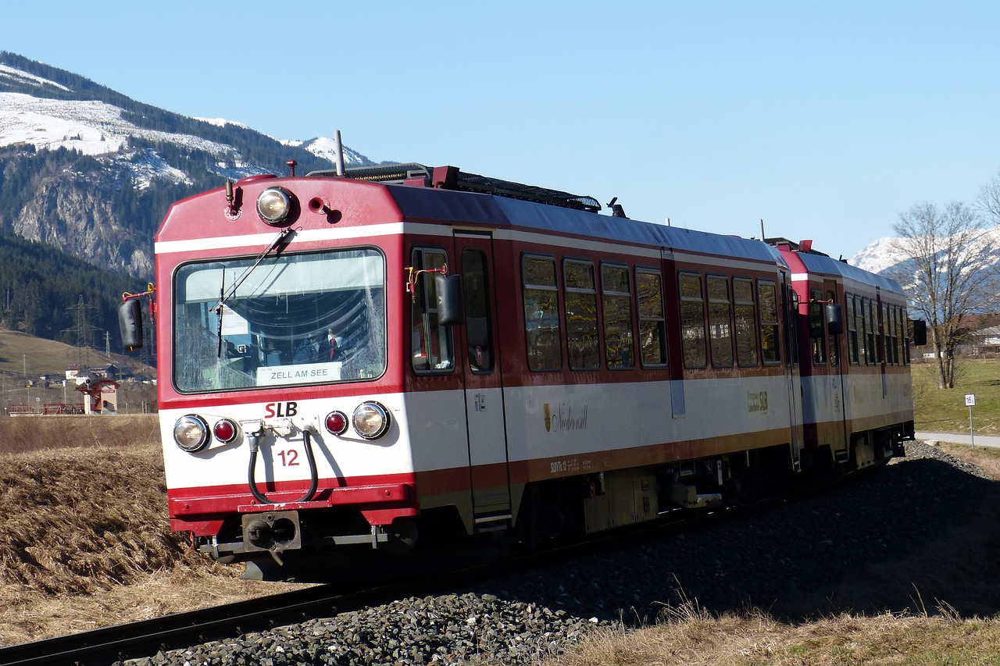

Der beste Blick folgt nach dem härtesten Aufstieg
Im Nationalpark Hohe Tauern sind alle bedeutenden alpinen Ökosysteme großflächig und ungestört erhalten. Mehr als ein Drittel aller in Österreich nachgewiesenen Pflanzenarten kommen im Nationalpark vor. Bei den Säugetieren, Vögeln, Reptilien und Amphibien sind es um die 50 %. Auch jenen Tieren, welche zu Beginn des 19. Jahrhunderts in fast ganz Europa ausgerottet waren, bietet der Nationalpark nunmehr einen gesicherten Lebensraum. Diese beeindruckende Biodiversität resultiert aus den vielfältigen klimatischen, geologischen, geomorphologischen und hydrologischen Standortbedingungen im Hochgebirge und den differenzierten Anpassungsstrategien der Pflanzen und Tiere. Wer von den Tälern zu den höchsten Gipfeln des Nationalparks wandert, durchquert in den Höhenstufen gleichsam alle Klimazonen von Mitteleuropa bis in die Arktis. Das Tauernfenster – ein in Form und Größe weltweit einzigartiges tektonisches Fenster – gewährt Einblicke in das tiefste tektonische Stockwerk der Alpen und ist damit der Schlüssel für das Verständnis des geologischen Aufbaus der Alpen. Gesteine unterschiedlichen Alters, unterschiedlicher Entstehung und unterschiedlicher chemischer Zusammensetzung beherbergen einen wahren Schatz an bis zu 200 verschiedenen Mineralien. (Quelle: hohetauern.at)
Aktivitäten

Lernen Sie die Natur in allen Höhenstufen des Nationalparks auf unseren Lehrpfaden besser kennen – vom Talboden bis zu den Gletschern der Hohen Tauern begleiten und informieren wir Sie.
Erfahren Sie Sehenswürdigkeiten, die schönsten Aussichtspunkte und kulturelle Highlights mit dem Elektrofahrrad. Optimal ausgebaute Radwege - fern ab jeder Hauptstraße - bringen Sie in den Nationalpark Hohe Tauern.
Erleben Sie Natur und architektonische Meisterleistungen bei uns im Nationalpark. Von den Krimmler Wasserfällen, über die Großglockner Hochalpenstraße bis zu unseren Museen und Informationszentren. Hier ist für jeden was dabei!
Anreise
Am bequemsten und umweltfreundlichsten erreichen Sie den Nationalpark Hohe Tauern mit der Bahn. Das Zugfahren ermöglicht auch eine stressfreie Reise ohne großes Verkehrsaufkommen oder Stau. Die Pinzgauer Lokalbahn oder "Nationalparkbahn" führt von Zell am See bis Krimml und ist das ideale Transportmittel um die Region zu entdecken. Nostalgiefahrten mit der alten Dampflok sind besonders beliebt. Auch die Radfahrer schätzen die Schmalspurbahn sehr, um zum Ausgangspunkt des Tauernradweges zu gelangen. Die Schmalspurbahn, welche heute über modernste Niederflurfahrzeuge verfügt, ist für den Oberpinzgau ein unverzichtbares Transportmittel geworden. Ob für den Weg zur Arbeit, Schule oder zum Wandern, Skifahren und Ausflüge machen, die Pinzgauer Lokalbahn ist im Stundentakt mit bis zu 80 km/h unterwegs. (Quelle: nationalpark.at)